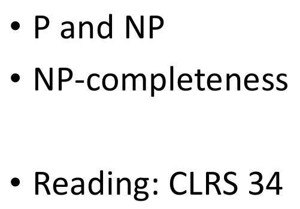
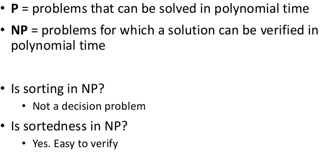

Algorithms week 14
Outline

NP-completeness
Why should we care?
Optimization & Decision problems
optimization problems를 decision problems로 바꿀 수 있다.
Algorithmic vs problem complexity
Class of “P” problems
Tractable / Intractable problems
Example of unsolvable problem
Example of intractable problems
Hamiltonian cycle
Traveling salesman problem
Interactable problems
P vs NP
Nondeterministic algorithms
Nondeterministic and NP algorithms
Class of NP problems

P and NP

E.g.: Hamiltonian cycle
Clay mathematics institute

Is P = NP?
P and NP
NP-completenes (informally)
Reduction
Polynomial reductions
Reduction: an example
NP-completeness (formally)
Implications of reduction
Proving polynomial time
Proving NP-completeness in practice
Proving NP-completeness
The structure of NP-completeness proofs